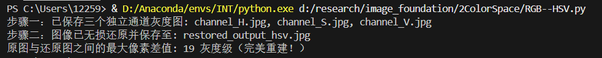
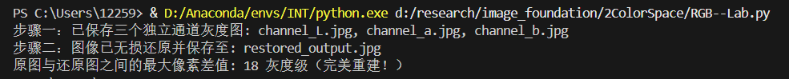

RGB
物理含义
红绿蓝三原色，每种颜色用三个通道的强度值表示
主要特点
易于理解，但与人眼感知色彩有差别，不适合颜色分析
使用场合
用于显示设备，摄像头图像采集，数字图像处理
HSV
物理含义
色相（用角度表示），饱和度（颜色纯度，0到1，0为灰色），明度（颜色亮度，0到1，0表示黑色）
主要特点
与人眼感知色彩相似
使用场合
颜色分割（基于颜色的物体识别）、图像增强和修正（调整色调或饱和度）、图像分析和计算机视觉
Lab
物理含义
描述人类视觉感知到的颜色
L（亮度） a（红绿轴，负值为绿，正值为红）b（黄蓝轴，负值为蓝，正值为黄）
主要特点
具有设备无关性，不依赖于显示设备或照明条件，适用于高精度颜色管理
使用场合
常用于颜色管理和色彩匹配
YCbCr
物理含义
Y（图像亮度信息）Cb（蓝色差分量，蓝色与亮度的差异） Cr（红色差分量，红色与亮度的差异）
主要特点
减少数据量
使用场合
视频压缩和编码，视频信号的处理和传输
RGB<->HSV转换

RGB->HSV
①计算最大值与最小值
max_val = max(r, g, b)
min_val = min(r, g, b)
C = max_val - min_val色度
②计算明度
V = max_val
③计算饱和度
S={max_valC0,if max_val>0otherwise
④计算色调
Hsector=⎩⎨⎧(Cg−b)mod6,Cb−r+2,Cr−g+4,max_val=rmax_val=gmax_val=b
H=6Hsector
HSV->RGB
根据色调H处于360°圆环中哪一个扇区来决定RGB的分配权重
①计算扇区和偏移量
hi=⌊60H⌋(mod6)
f=60H−⌊60H⌋
②计算中间分量p,q,t
p=V×(1−S)
q=V×(1−f×S)
t=V×(1−(1−f)×S)
③分扇区映射
- 若 hi=0：(R,G,B)=(V,t,p)
- 若 hi=1：(R,G,B)=(q,V,p)
- 若 hi=2：(R,G,B)=(p,V,t)
- 若 hi=3：(R,G,B)=(p,q,V)
- 若 hi=4：(R,G,B)=(t,p,V)
- 若 hi=5：(R,G,B)=(V,p,q)
RGB<->Lab转换

RGB->Lab
- 利用以下公式将RGB转换为XYZ
- X = 0.412453R + 0.357580G + 0.180423B
- Y = 0.212671R + 0.715160G + 0.072169B
- Z = 0.019334R + 0.119193G + 0.950227B
- 将XYZ转换为Lab
- L = 116f(Y/Yn) - 16 (对于Y/Yn > 0.008856时，L = 116 * Y/Yn - 16，否则L = 903.3 * Y/Yn)
- a = 500 * (f(X/Xn) - f(Y/Yn))
- b = 200 * (f(Y/Yn) - f(Z/Zn))
- 其中f(x)是辅助函数，对于x > 0.008856时，f(x) = x^(1/3)，否则f(x) = (7.787x + 4/29)
- Xn, Yn, Zn是XYZ色彩空间的白色参考点，通常是D65标准光源的值。
Lab->RGB
- Lab->XYZ
- 计算中间因子
fy=116L+16
fx=fy+500a
fz=fy−200b
- 反向非线性映射
xr={fx33δ2⋅(fx−294)if fx>δotherwise
- 结合白点计算XYZ坐标
X=xr⋅Xn,Y=yr⋅Yn,Z=zr⋅Zn
- XYZ->RGB
- XYZ->线性RGB
RlinearGlinearBlinear=3.2404542−0.96926600.0556434−1.53713851.8760108−0.2040259−0.49853140.04155601.0572252XYZ
- 线性RGB->标准sRGB(gamma变换)
Csrgb={12.92⋅C1.055⋅C1/2.4−0.055if C≤0.0031308if C>0.0031308